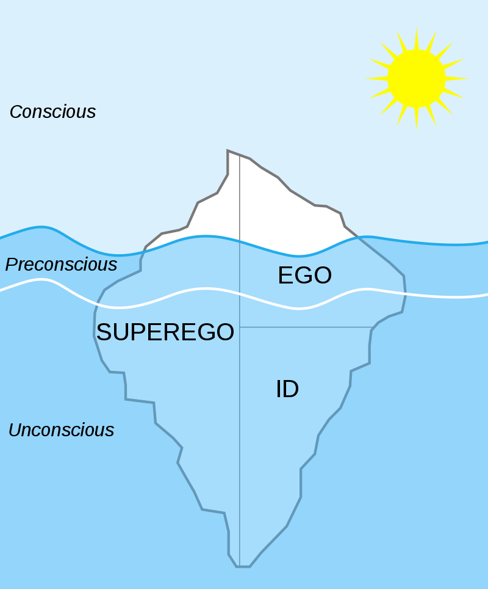

Freud (1923) later developed a more structural model of the mind comprising the entities id, ego, and superego (what Freud called “the psychic apparatus”). These are not physical areas within the brain, but rather hypothetical conceptualizations of important mental functions.
The id, ego, and superego have most commonly been conceptualized as three essential parts of the human personality.
Freud assumed the id operated at an unconscious level according to the pleasure principle (gratification from satisfying basic instincts). The id comprises two kinds of biological instincts (or drives) which Freud called Eros and Thanatos.
Eros, or life instinct, helps the individual to survive; it directs life-sustaining activities such as respiration, eating, and sex (Freud, 1925). The energy created by the life instincts is known as libido.
In contrast, Thanatos or death instinct, is viewed as a set of destructive forces present in all human beings (Freud, 1920). When this energy is directed outward onto others, it is expressed as aggression and violence. Freud believed that Eros is stronger than Thanatos, thus enabling people to survive rather than self-destruct.

The ego develops from the id during infancy. The ego's goal is to satisfy the demands of the id in a safe a socially acceptable way. In contrast to the id, the ego follows the reality principle as it operates in both the conscious and unconscious mind.
The superego develops during early childhood (when the child identifies with the same sex parent) and is responsible for ensuring moral standards are followed. The superego operates on the morality principle and motivates us to behave in a socially responsible and acceptable manner.
The basic dilemma of all human existence is that each element of the psychic apparatus makes demands upon us that are incompatible with the other two. Inner conflict is inevitable.
For example, the superego can make a person feel guilty if rules are not followed. When there is a conflict between the goals of the id and superego, the ego must act as a referee and mediate this conflict. The ego can deploy various defense mechanisms (Freud, 1894, 1896) to prevent it from becoming overwhelmed by anxiety.